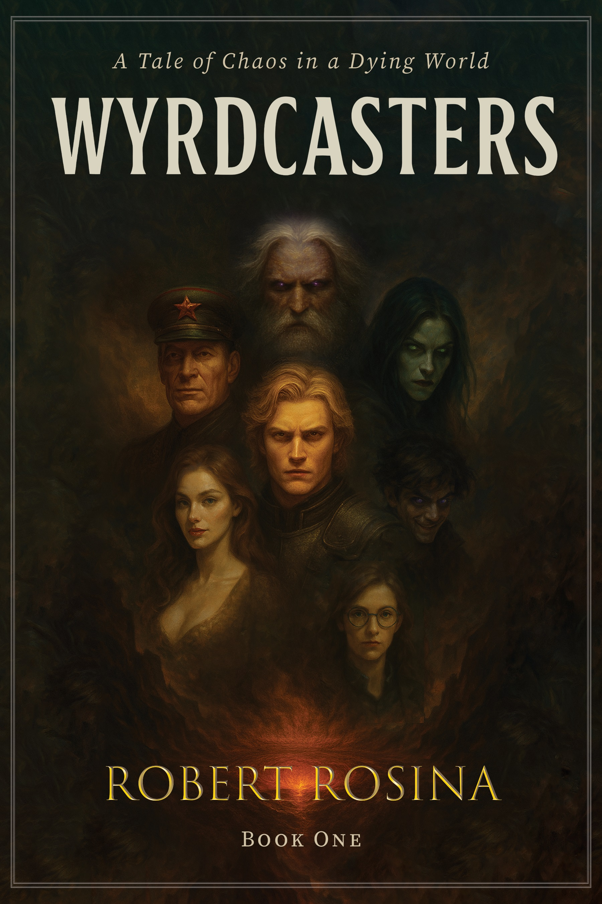

In the tradition of The Lord of the Rings, Dune, and the Cthulhu Mythos, Wyrdcasters is a fantasy universe developed through literature, music, mythology, film, and scholarly research, inspired by Norse and Indo-European mythology.
The Saga of the Wyrdcasters is the central mythopoeic work of the Wyrdcasters universe — an epic unfolding across nine volumes, beginning with the opening trilogy. Inspired by Norse mythology and shaped through visions experienced during a profound break from ordinary reality, the Wyrdcasters saga forms the spine of a larger creative mythos. After half a decade devoted to building the cosmology, histories, and laws of its world, Robert stepped away from a life in corporate law to give full voice to the mythic vision revealed to him.
At its core, the saga asks a singular, enduring question — a question the author anticipates may take a lifetime, or longer, to answer:
What if the Norse gods were real — evolved and advanced beings from a bygone age — but the stories we inherited were distorted by the limited understanding of ancient minds?
Rather than a strict retelling of myth, the overarching narrative extrapolates from the Eddas, imagining a world where the ancient accounts were true, but fundamentally misunderstood. Inspired by Norse cosmology, the story explores themes of spiritual evolution and corruption, delving into madness, metaphysics, and the transformation of complex characters as they journey through a collapsing spiritual cosmos as it spirals toward Ragnarok.
The first novel in the Wyrdcasters saga, releasing late 2025.
Discover the secret origins of the Norse gods in Wyrdcasters: Chaos in a Dying Realm — the debut installment in the imaginative sci-fi/fantasy epic.
The ancient world of Heim stands on the brink of collapse: frost monsters spread like an icy plague across a corrupted, frozen land; invaders and rival nations press from without, while traitors plot from within — all as mysterious forces lurking in the shadows attempt to manipulate the fate of the universe. Amidst this turmoil, the dormant powers of the young god-to-be Odin awaken — and he is cast into exile. To prevent his world from descending into chaos, Odin and his allies must rally the legends of Norse mythology — the Wyrdcasters — whose combined might just may be enough to halt Heim’s descent into madness and ruin.
Robert is a mythopoeist developing mythology through literature, music, education, and research. He is currently building a multidisciplinary body of work exploring the intersections of mythology, madness, and metaphysics across multiple creative mediums while undertaking advanced studies in writing at the University of Sydney.
Robert’s interdisciplinary approach incorporates literary theory, comparative mythology, film and music theory, and legal analysis, with additional engagement in anthropology and ancient history. His academic interests include the relationship between fiction and mythology, the study of classical languages (Old Norse, Latin), and legal traditions such as oaths, divine justice, and sacred legal codes.
Admitted to the Supreme Court of New South Wales, Robert holds a Juris Doctor with Distinction from Macquarie University, where he received the Highest Achiever award in both the Alternative Dispute Resolution and Health Law units. He also has a strong interest in film, particularly formalist and symbolic cinema, and holds a Bachelor of Media in Screen Practice and Production with Distinction, a background that informs his understanding of visual storytelling and narrative construction.
Robert is available for invited talks, interviews, and collaborations on mythology, narrative development, and the construction of mythic storytelling across literature, music, film, and cultural tradition.